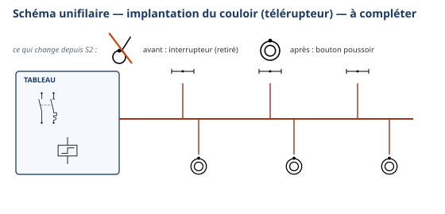
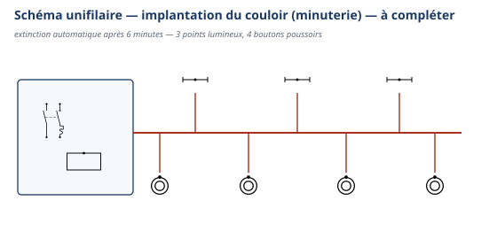
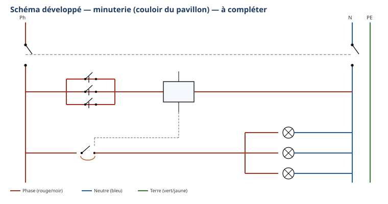

Thème / DomaineBrasage tendre et schémas domestiques
Module atelier S3-E2 · 4 h × 2 passagesSchémas domestiques avancés — télérupteur et minuterie
SéquenceS3 · semaines 10-11
Nom________________
Prénom________________
Date (passage 1 / passage 2)_______ / _______
Positionnement01234
Mise en situation professionnelle
Ordre d'intervention n° OI-S3-4 : le client fait moderniser l'éclairage du couloir de son pavillon.
Aujourd'hui, il y a trop d'interrupteurs répartis dans le couloir, et il faut toujours penser à retourner
éteindre. Le client veut pouvoir allumer et éteindre depuis n'importe quel bouton poussoir, à n'importe
quel endroit du couloir. Passage 1 (semaine 10) : vous installez un télérupteur, commandé par
plusieurs boutons poussoirs. Passage 2 (semaine 11) : le client va plus loin — il ne veut plus jamais
laisser le couloir allumé sans raison, pour économiser l'électricité. Il demande une extinction automatique du
couloir après 6 minutes. Vous remplacez alors le télérupteur par une minuterie, sur le même principe de
câblage.
Tâches
T10 Repérer, raccorder, assembler les réseaux fluidiques, aérauliques et électriques T11 Contrôler les circuits hors fonctionnement T12 Respecter les consignes de sécurité et protéger la zone de travail
Savoirs
S2.2 Lecture de plan NOUVEAU Prérequis : S2.1, S5.6
Savoir-être
Sécurité électrique sans rappel · rigueur du câblage · lecture méthodique et autonome d'un schéma
Compétences (≤ 4)
ConfortementC3.6 Câbler, repérer, connecter les liaisons électriques et électroniques DécouverteC3.2 Identifier sur site les réseaux d'alimentation
Ce qui change depuis S2 — En S2, vous câbliez des montages simples :
un seul interrupteur, une seule lampe. Aujourd'hui, vous découvrez un appareillage de commande automatisée :
un relais (le télérupteur, puis la minuterie) reçoit l'ordre de plusieurs boutons poussoirs montés
en parallèle. Ce n'est plus le bouton lui-même qui allume ou éteint la lampe : c'est le relais qui bascule,
sur l'ordre du bouton. Le schéma se lit désormais à deux niveaux : un circuit de commande (les
boutons poussoirs et la bobine du relais) et un circuit de puissance (le contact du relais et les lampes) —
c'est le savoir NOUVEAU S2.2 lecture de plan. Autre nouveauté : avant de câbler, vous identifiez sur
site, dans le vrai tableau de l'atelier, l'arrivée Ph/N/PE et le circuit d'éclairage concerné (compétence
C3.2, votre première rencontre avec cette compétence) — vous ne partez plus d'une platine déjà repérée par
le professeur. La mise sous tension reste, comme en S1-S2, un geste exclusivement professeur.
Passage 1 / Passage 2 — ce qui change
Passage 1 (semaine 10) — télérupteur, très guidé : vous lisez une fiche-guide avec une banque de mots
pour compléter le texte à trous, vous complétez des schémas unifilaire et développé à trous, avec des repères
partiels, puis vous identifiez sur site l'arrivée Ph/N/PE dans le tableau. Vous câblez ensuite le télérupteur
sur platine, réalisez votre contrôle hors tension, puis, après mise sous tension par le professeur, vous testez
chaque bouton poussoir. Passage 2 (semaine 11) — minuterie, autonomie guidée : même démarche, mais les aides sont largement
retirées : pas de banque de mots pour le texte à trous, schémas sans aucun repère. Vous devez retrouver
seul(e), en vous appuyant sur vos notes du passage 1, la méthode déjà apprise et la transposer à la minuterie.
C'est cette progression d'autonomie qui EST la méthode du module : moins d'aide, plus de transfert.
Objectifs — je serai capable de…
lire un schéma électrique unifilaire et un schéma développé d'un télérupteur, puis
d'une minuterie, et en identifier les éléments (disjoncteur, boutons poussoirs, bobine, points lumineux) ;
compléter une fiche-guide (texte à trous et schémas à trous) à partir de la documentation technique
fournie ;
identifier sur site, dans le tableau de l'atelier, l'arrivée Ph/N/PE et le circuit d'éclairage
concerné par l'intervention ;
câbler un télérupteur (passage 1) puis une minuterie (passage 2) sur platine, à partir du schéma que
j'ai complété ;
réaliser un contrôle hors tension avant toute mise sous tension, réalisée uniquement par le
professeur, puis vérifier le fonctionnement depuis chaque bouton poussoir.
Prérequis — je sais déjà…
Je sais déjà câbler un simple allumage et un va-et-vient en respectant les
couleurs normalisées (S1-E1, S2-E1) ; je sais réaliser seul(e) une consignation/vérification d'absence de
tension (VAT) avant toute intervention ; je sais lire un schéma développé simple avec Ph, N, un
interrupteur et une lampe. Si un de ces prérequis me manque encore, je le signale au professeur avant de
commencer : un rappel court est possible pendant l'exercice au fil de l'eau, jamais pendant la mise en sécurité de
la zone.
Matériel
Platine en bois équipée d'un rail oméga (× 1 par poste)
Disjoncteur magnétothermique 1P+N ou porte-fusible (× 1)
Télérupteur unipolaire ou bipolaire (passage 1) puis minuterie (passage 2), selon
matériel de l'atelier, à faire valider par le professeur
3 supports de lampe + ampoules adaptées à la tension d'alimentation, ou voyants de simulation
Bornier de phase, bornier de neutre, bornier de terre (× 1 chacun)
Vis à bois pour la fixation du matériel (consommable)
Fils électriques souples, section du poste école (à faire valider par le professeur), couleurs
normalisées : rouge ou marron (phase), bleu (neutre), vert/jaune (terre) (consommable)
Tournevis plat et tournevis cruciforme, pince à dénuder, pince coupante
Multimètre numérique + jeu de cordons de mesure (rouge + noir)
Sécurité électrique — un rituel déjà acquis, qui ne s'allège jamais
Vous connaissez déjà la consignation et la vérification d'absence de tension (VAT)
depuis S1. Aujourd'hui, personne ne vous les redémontre : vous les appliquez seul(e), sans rappel. Un seul
point ne change jamais, aux deux passages : la mise sous tension et les essais après câblage restent un
geste exclusivement professeur.
Risque
Parade
Choc électrique par contact direct avec une pièce sous tension
Ne jamais toucher un fil ou une platine sans avoir vérifié l'absence de tension (VAT). Travailler toujours hors tension pour tout câblage.
Court-circuit par une bobine de relais mal raccordée
Respecter strictement le schéma développé complété : la bobine (A1/A2 ou B/A2) ne se raccorde jamais directement en série avec les lampes, elle a son propre petit circuit de commande.
Relais détruit par une alimentation de la bobine à une mauvaise tension
Vérifier la tension d'alimentation indiquée sur le télérupteur ou la minuterie avant tout câblage (selon le matériel de l'atelier, à faire valider par le professeur).
Boutons poussoirs mal raccordés (en série au lieu d'en parallèle)
Chaque bouton poussoir se raccorde en parallèle des autres, jamais en série : sinon un seul bouton suffirait à couper la commande des autres.
Mise sous tension accidentelle pendant le câblage
Disjoncteur du poste maintenu ouvert pendant tout le câblage. Seul le professeur ferme le disjoncteur, après contrôle systématique.
La consignation — rituel NF C 18-510, appliqué sans rappel
1. Couper — ouvrir le disjoncteur du poste.
2. Vérifier l'absence de tension (VAT) — contrôler au multimètre, position voltmètre.
3. Condamner / signaler — le professeur garde la main sur la mise sous tension.
4. Travailler hors tension — je câble, je mesure la continuité, toujours disjoncteur ouvert.
Gestes interdits
Jamais toucher un fil ou une platine sans avoir vérifié l'absence de tension ;
Jamais câbler ou modifier une platine sous tension ;
Jamais mettre une platine sous tension moi-même — seul le professeur le fait, après contrôle ;
Jamais raccorder un bouton poussoir en série sur le circuit de commande — toujours en parallèle ;
Jamais confondre le circuit de commande (petit courant, bobine) et le circuit de puissance (lampes) lors du
câblage : je vérifie systématiquement sur mon schéma complété avant de raccorder un fil.
Avant de commencer, complétez la fiche de sécurité à cocher ci-dessous et
faites-la viser par le professeur. Tenue et EPI exigés :
Chaussures de sécurité ; Pas de bijoux ni de montre ; Manches ajustées ; Cheveux longs attachés.
Fiche de sécurité à cocher — document CAP, F. Henninot.
🚨 En cas d'incident — couper (interrupteur général ou arrêt d'urgence
de l'atelier, localisé dès l'entrée), alerter immédiatement le professeur, ne jamais déplacer un
camarade électrisé sans certitude sur son état. La trousse de secours est localisée dès l'entrée dans l'atelier.
PASSAGE 1 · SEMAINE 10 · JALON A — fiche-guide télérupteur — ≈ 60 min
1. Le télérupteur — texte à compléter
Banque de mots (chaque mot sert une seule fois) : commander — plusieurs endroits —
1,5 — 8 — 16 — unipolaire — bipolaire
Le télérupteur est un dispositif permettant de l'allumage et l'extinction d'un
point lumineux depuis différents, à partir de boutons poussoirs.
Comme pour tous les circuits éclairage, la norme NF C 15-100 impose : un câblage en
mm² pour un circuit comprenant un maximum de
points d'éclairage, avec une protection par disjoncteur de A.
Il existe deux types de télérupteurs : et .
Un télérupteur (à un seul pôle) coupe uniquement la phase lorsque l'on éteint les
appareils d'éclairage. Un télérupteur coupe à la fois la phase et le neutre.
Question — Le client vous demande : « pourquoi ne pas simplement remettre
plus d'interrupteurs va-et-vient, comme en S2 ? ». Que lui répondez-vous ? (pensez au nombre de boutons poussoirs
possibles avec un télérupteur, comparé à un va-et-vient qui n'en accepte que deux)
2. Schéma unifilaire — à compléter
Ce schéma montre où se trouvent les appareils dans le couloir : le tableau, les
points lumineux au plafond, les boutons poussoirs sur les murs. Complétez les repères S1, S2, S3, L1, L2, L3
directement sur le schéma, à partir de la fiche technique fournie par le professeur.

Schéma unifilaire — implantation du couloir, sans repères. Complétez les repères des
appareils.
3. Schéma développé — à compléter
Ce schéma montre comment les fils se raccordent : c'est lui que vous suivrez
pour câbler. Il y a deux circuits distincts : le circuit de commande (en haut) et le circuit de puissance
(en bas). Repérez-les et complétez Q2, S1, S2, S3, T1, A1, A2, L1, L2, L3.
Télérupteur — schéma réduit, sans repères. Le schéma complet figure en annexe
pleine page (annexe 1) : gardez-le sous les yeux pendant le câblage.
Question — Sur le schéma développé, entourez en rouge le circuit de
commande et en bleu le circuit de puissance. Combien de boutons poussoirs comptez-vous dans le circuit de
commande ? Comment sont-ils raccordés entre eux ?
4. Identifier sur site — le tableau de l'atelier
Avant de câbler, rendez-vous devant le tableau électrique réel de l'atelier,
avec le professeur. Repérez : l'arrivée (le disjoncteur général), le circuit d'éclairage concerné
par votre platine, et les conducteurs Ph, N, PE. Notez ci-dessous ce que vous observez.
☐ 1. J'ai repéré le disjoncteur général (l'arrivée) du tableau
☐ 2. J'ai repéré le disjoncteur du circuit d'éclairage concerné par mon poste
☐ 3. J'ai repéré visuellement les conducteurs Ph (phase), N (neutre) et PE (terre)
PASSAGE 1 · SEMAINE 10 · JALON B — câblage du télérupteur — ≈ 65 min
Préparer la platine
☐ 1. Vérifier que la platine est hors tension (disjoncteur du poste ouvert)
☐ 2. Positionner le rail oméga selon les cotes indiquées par le professeur
☐ 3. Positionner le disjoncteur, le télérupteur, les 3 boutons poussoirs et les points lumineux selon le
schéma unifilaire complété
☐ 4. Fixer chaque élément à la vis, sans forcer
Câbler le circuit de commande
☐ 1. Raccorder la phase (après le disjoncteur) à chaque bouton poussoir S1, S2, S3, en parallèle
☐ 2. Raccorder la sortie commune des boutons poussoirs à la borne A1 (ou B) de la bobine du télérupteur
☐ 3. Raccorder la borne A2 de la bobine au neutre
Câbler le circuit de puissance
☐ 4. Raccorder la phase (après le disjoncteur) au contact de sortie du télérupteur
☐ 5. Raccorder la sortie du contact aux 3 lampes, en parallèle
☐ 6. Raccorder le neutre directement du bornier à chaque lampe
☐ 7. Vérifier que chaque connexion est bien serrée et conforme aux couleurs normalisées
Mesure de continuité (multimètre, disjoncteur ouvert)
Valeur attendue
Valeur mesurée
Conforme ?
Continuité du circuit de commande (un bouton poussoir appuyé)
proche de 0 Ω
☐ Oui ☐ Non
Continuité du circuit de commande (aucun bouton appuyé)
résistance infinie
☐ Oui ☐ Non
Si une valeur ne correspond pas à celle attendue,
signalez-le vous-même au professeur avant de l'appeler pour le contrôle final : l'honnêteté du contrôle fait
partie de l'évaluation du savoir-être. Une fois votre contrôle conforme, appelez le professeur : lui seul ferme
le disjoncteur et réalise les essais.
Essais (réalisés par le professeur)
Contrôle et essais
☐ Câblage vérifié conforme au schéma par le professeur
☐ Appui sur S1 : la lampe change d'état
☐ Appui sur S2 : la lampe change d'état
☐ Appui sur S3 : la lampe change d'état
Visa professeur : ________________ Heure : ________________
Question — Un bouton poussoir de va-et-vient (S2) reste-t-il dans la même
position quand vous l'actionnez, ou revient-il tout seul ? Et un bouton poussoir de télérupteur ? Quelle
différence observez-vous, et pourquoi cela n'a-t-il pas d'importance pour le fonctionnement du télérupteur ?
⚠ Rappel — fin du passage 1 — Avant de ranger, remettez votre platine hors
tension (disjoncteur ouvert, débranché). Rendez-vous en semaine 11 pour le passage 2 (minuterie).
PASSAGE 2 · SEMAINE 11 · JALON A' — fiche-guide minuterie — ≈ 40 min
Ce qui change par rapport au passage 1 — Même démarche, mais
aides retirées : pas de banque de mots cette fois, et les schémas ne comportent aucun repère de
départ. Appuyez-vous sur vos réponses du passage 1 et sur la fiche technique minuterie fournie par le
professeur pour retrouver seul(e) la méthode.
1. La minuterie — texte à compléter (sans banque de mots)
La minuterie est un dispositif permettant de l'allumage et l'extinction d'un ou
points lumineux, à partir d'un nombre quelconque de points de commande (boutons
poussoirs), pour définie à l'avance.
Comme pour tous les circuits éclairage, la norme NF C 15-100 impose : un câblage en
mm² pour un circuit comprenant un maximum de
points d'éclairage, avec une protection par disjoncteur de A.
Question de transfert — Les valeurs de la norme NF C 15-100 (section de
câblage, nombre maximal de points d'éclairage, calibre du disjoncteur) sont-elles les mêmes qu'au télérupteur ?
D'après vous, pourquoi ?
2. Situation du client
Le couloir du client comporte 3 points lumineux, commandés par 4 boutons
poussoirs. Le couloir reste régulièrement allumé sans raison. Le client, soucieux de préserver l'environnement
et de diminuer sa consommation électrique, souhaite une extinction automatique du couloir après 6 minutes.
3. Schéma unifilaire — à compléter (sans repère)

Schéma unifilaire — implantation du couloir (minuterie), sans repères. Complétez
tous les repères vous-même : Q2, M1, S1 à S4, L1 à L3.
4. Schéma développé — à compléter (sans repère)

Minuterie — schéma réduit, sans repères. Schéma complet en annexe pleine page
(annexe 2).
Question — Comparez ce schéma à celui du télérupteur (passage 1). Qu'est-ce
qui est identique ? Qu'est-ce qui est différent ? (regardez bien le contact de sortie du relais)
PASSAGE 2 · SEMAINE 11 · JALON B' — câblage de la minuterie — ≈ 85 min — autonomie guidée
Préparer et câbler
☐ 1. Vérifier que la platine est hors tension
☐ 2. Identifier sur site l'arrivée Ph/N/PE du poste, comme au passage 1, sans aide
☐ 3. Positionner le disjoncteur, la minuterie, les 4 boutons poussoirs et les 3 points lumineux
☐ 4. Câbler le circuit de commande : phase → 4 boutons poussoirs en parallèle → borne B (ou A1) de la
minuterie → borne A2 → neutre
☐ 5. Câbler le circuit de puissance : phase → contact de sortie de la minuterie → 3 lampes en
parallèle → neutre
☐ 6. Vérifier que chaque connexion est bien serrée et conforme au schéma
Mesure de continuité (multimètre, disjoncteur ouvert)
Valeur attendue
Valeur mesurée
Conforme ?
Continuité du circuit de commande (un bouton poussoir appuyé)
proche de 0 Ω
☐ Oui ☐ Non
Continuité du circuit de commande (aucun bouton appuyé)
résistance infinie
☐ Oui ☐ Non
Si le résultat ne correspond pas à celui attendu,
signalez l'écart au professeur avant l'appel de contrôle final. Une fois votre contrôle conforme, appelez le
professeur : lui seul met sous tension et réalise les essais.
Essais et réglage du temps (réalisés par le professeur)
Contrôle et essais
☐ Câblage vérifié conforme au schéma par le professeur
☐ Appui sur S1, S2, S3 ou S4 : les 3 lampes s'allument
☐ Le potentiomètre de réglage du temps est identifié sur la minuterie (plage 0,5 à 10 min selon matériel)
☐ Le professeur règle le temps pour se rapprocher de la demande du client (6 min) et déclenche un essai
Visa professeur : ________________ Heure : ________________
Ce que j'observe
Chronométrage
Temps entre le dernier appui sur un bouton poussoir et l'extinction automatique
________ min ________ s
Question de synthèse — Un télérupteur reste allumé ou éteint jusqu'au
prochain appui sur un bouton poussoir. Une minuterie, elle, s'éteint toute seule après un temps réglé.
En observant vos deux schémas développés (télérupteur et minuterie), quel seul élément du circuit de
puissance porte cette différence ?
Question — Le client a demandé « 6 minutes ». Le temps réglé sur votre
platine correspond-il exactement à cette demande ? Que proposeriez-vous si ce n'était pas le cas ?
☐ 1. Remettre la platine hors tension (disjoncteur ouvert, débranchée)
☐ 2. Remettre la molette du multimètre sur OFF, débrancher et ranger les cordons sans coude serré
☐ 3. Ranger les fils, sans les plier de façon serrée ; jeter les chutes dans le bac approprié
☐ 4. Ranger l'outillage (tournevis, pinces, multimètre) à son emplacement
☐ 5. Vérifier que le poste est propre et dégagé pour le poste suivant
Jalons franchis
☐ Passage 1 : fiche-guide télérupteur complétée, identification sur site réalisée, télérupteur câblé et
contrôlé, essais professeur concluants
☐ Passage 2 : fiche-guide minuterie complétée sans aide, minuterie câblée et contrôlée, essais professeur et
réglage du temps concluants
Visa professeur (passage 1) : ________________ Visa professeur (passage 2) : ________________
Grille d'évaluation
Échelle FrigorX : 0 Non évalué · 1 Non acquis · 2 En cours
d'acquisition · 3 Acquis · 4 Parfaitement maîtrisé. Statuts du jour : C3.6 Confortement, C3.2
Découverte (poids réduit ou nul — aucune compétence en statut Évaluation dans ce module).
Compétence / savoir-être
Ancrage
0 Non évalué
1 Non acquis
2 En cours
3 Acquis
4 Maîtrisé
C3.6 Câbler, repérer, connecter les liaisons électriques et électroniques
sur T10 · T12 · S2.2 · S5.6
Compétence non observée ce jour.
Câblage non conforme au schéma complété, malgré aide, ou circuit de commande et circuit de puissance confondus.
Câble avec l'aide du professeur pour au moins l'un des deux circuits (commande ou puissance).
Câble seul(e) le télérupteur ET la minuterie à partir des schémas complétés, conformes, contrôle hors tension réalisé avant tout appel.
Comme « Acquis », et explique à un pair la différence entre circuit de commande et circuit de puissance.
C3.2 Identifier sur site les réseaux d'alimentation
sur T10 · S2.2
Compétence non observée ce jour.
Ne repère pas l'arrivée ni le circuit d'éclairage sur le tableau réel, même avec aide.
Repère l'arrivée et le circuit d'éclairage avec l'aide du professeur.
Repère seul(e), sur le tableau réel, l'arrivée, le circuit d'éclairage concerné et les conducteurs Ph/N/PE.
Comme « Acquis », et explique pourquoi ce repérage est indispensable avant toute intervention.
Télérupteur — schéma développé de travail complet (passage 1)
⚠ À imprimer en A3 PAYSAGE (une feuille par
poste) : c'est le document à garder sous les yeux pendant tout le câblage du jalon B. Les repères ne sont pas
redonnés ici : reportez ceux que vous avez retrouvés en jalon A.
Minuterie — schéma développé de travail complet (passage 2)
⚠ À imprimer en A3 PAYSAGE (une feuille par
poste) : c'est le document à garder sous les yeux pendant tout le câblage du jalon B'. Aucun repère n'est redonné :
à vous de retrouver les éléments seul(e), à partir de vos acquis du passage 1.